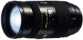

器材库 > 35mm画幅AF变焦镜头 > AF 100-400/4.5-6.7 APO

详细规格
镜头类型
远摄变焦镜头
发布日期
未知
焦距
100mm-400mm
最大光圈
f/4.5-f/6.7
最小光圈
f/32-f/45
视角（对角）
24.00-6.20
镜头结构
14片/11组
光圈叶片
9片
最大放大倍率
0.25
驱动马达
AF马达
滤镜口径
72mm
镜头卡口
Minolta/Konica-Minolta/Sony AF
防抖
否
颜色
黑色
尺寸
79.00x149.00mm
重量
http://image.xitek.com/product/productimages/Minolta/AF1004004.56.7APO_1130407088.jpgg
我用美能达2012-12-14 20:194.33 分
操作性 4.00耐用性 4.00性价比 5.00解像力 4.50色彩还原 4.50机械结构 4.00
duoww2010-07-22 19:154.25 分
操作性 4.50耐用性 4.00性价比 4.50解像力 4.50色彩还原 4.50机械结构 3.50
flhszhang2010-05-30 22:52
larry67832008-11-11 07:044.17 分
操作性 3.50耐用性 4.00性价比 4.50解像力 4.50色彩还原 5.00机械结构 3.50
hh62272008-06-19 20:134.33 分
操作性 5.00耐用性 4.00性价比 4.00解像力 4.50色彩还原 4.50机械结构 4.00
万泉河边2006-02-13 21:594 分
操作性 4.50耐用性 4.00性价比 2.50解像力 4.50色彩还原 4.50机械结构 4.00
chichienhsi2003-05-29 14:394.42 分
操作性 4.50耐用性 4.50性价比 3.00解像力 5.00色彩还原 5.00机械结构 4.50
银行世家2002-04-20 11:023 分
操作性 4.50耐用性 2.50性价比 2.00解像力 3.00色彩还原 2.50机械结构 3.50
产品图 / 样片
外观图
评测 / 相关文章
该产品暂无存档的评测文章